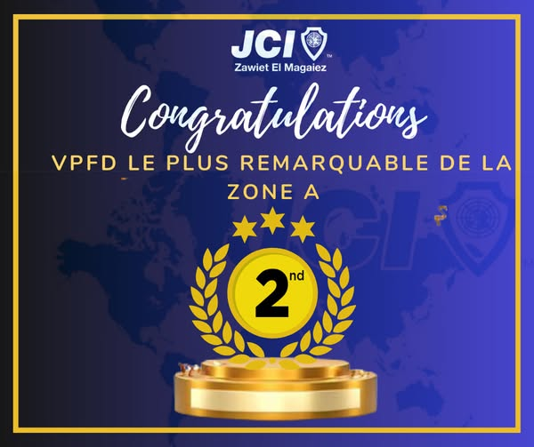
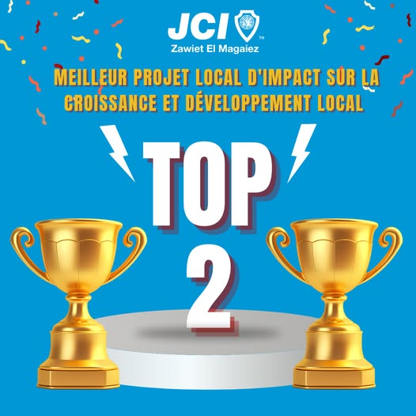
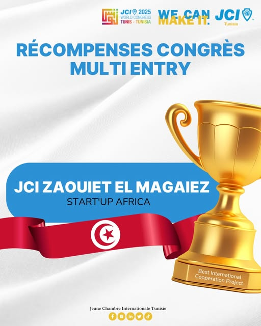
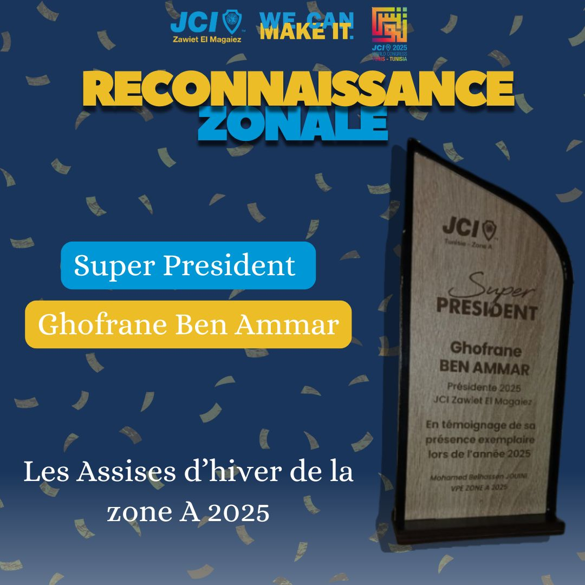

L’année 2025 marque un tournant historique pour la
JCI Zawiet el Magaiez.
Sous la présidence de Madame Ghofrane Ben Ammar,
Présidente Locale 2025, notre OLM a participé pour la première fois
aux programmes de récompenses zonales, nationales et internationales.
Cette dynamique ambitieuse reflète une vision stratégique axée sur
l’excellence, l’innovation et la reconnaissance de l’impact réel
des projets menés par nos membres.
📂
Soumissions Zonales
+10 dossiers – Zone A
📑
Soumissions Nationales
5 dossiers – JCI Tunisie
🌍
Soumission Internationale
1 dossier – Congrés mondial 2025
Récompenses obtenues – Année 2025

Top 2 Meilleur VPFD – Zone A
Catégorie : Leadership Financier
Année : 2025
Niveau : Zonal
Présidente : Ghofrane Ben Ammar

Top 2 Meilleur Programme d’Impact
Catégorie : Croissance & Développement Local
Année : 2025
Niveau : Zonal
Présidente : Ghofrane Ben Ammar

Projet « Startup Africa »
Catégorie : Entrepreneuriat & Innovation
Année : 2025
Niveau : International
Statut : Pré-sélectionné – Congrès Mondial JCI 2025

Reconnaissance Zonale Annuelle
Titre : Super Présidente
Année : 2025
Niveau : Zonal – Zone A
Présidente : Ghofrane Ben Ammar